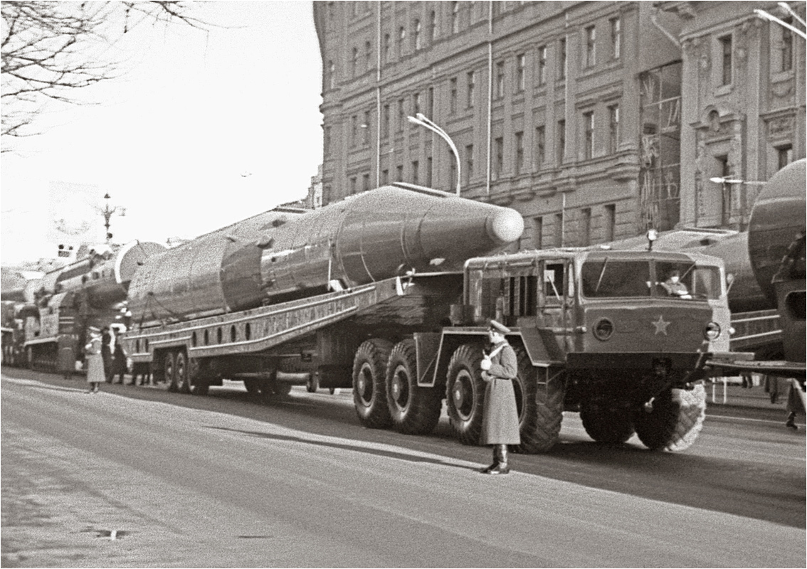
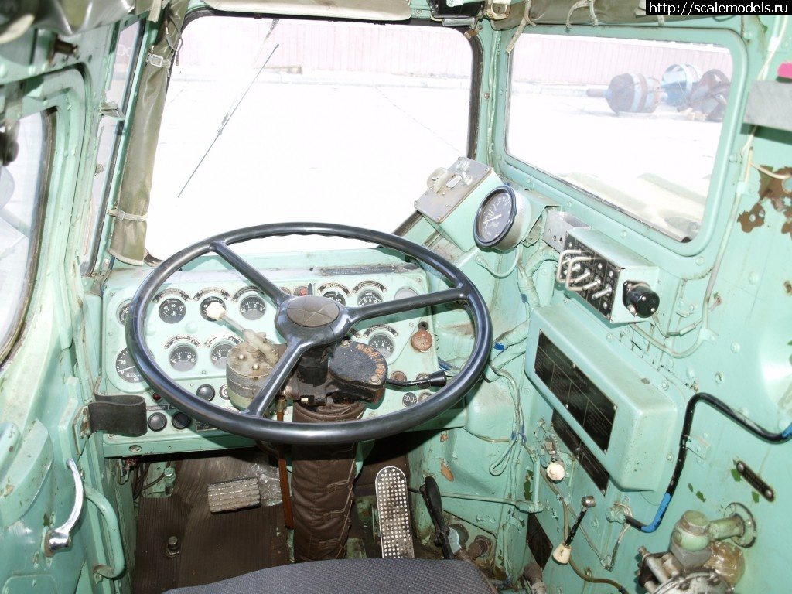
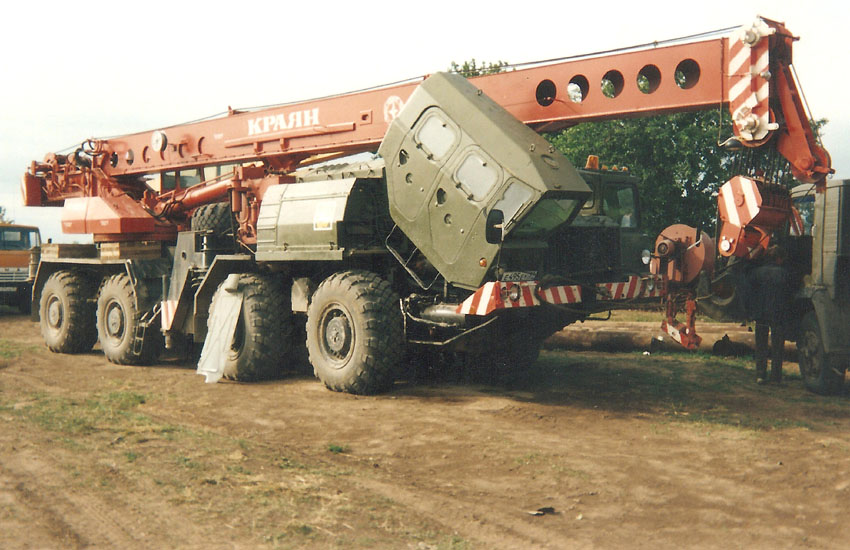
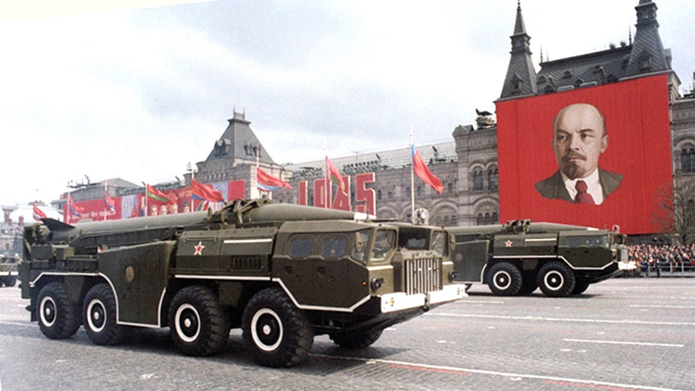
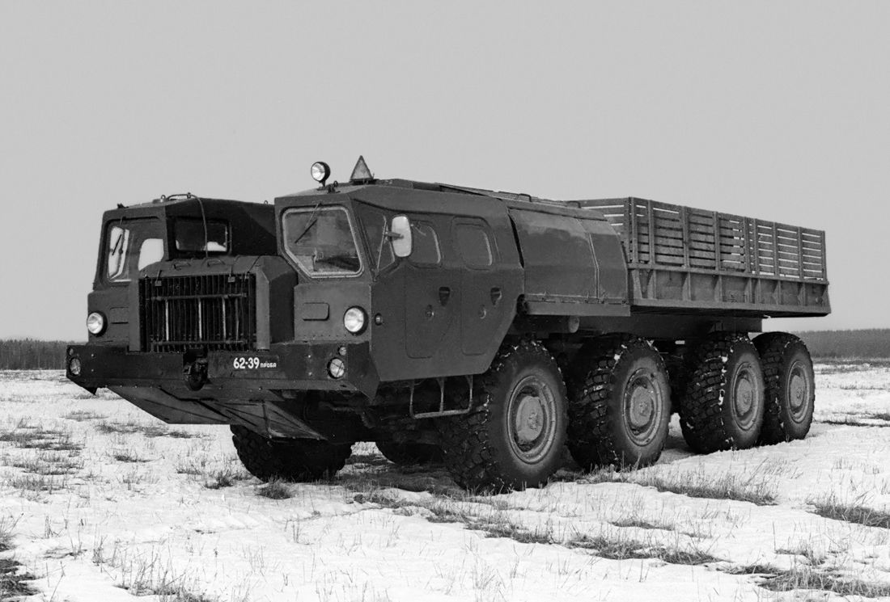
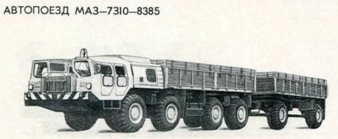
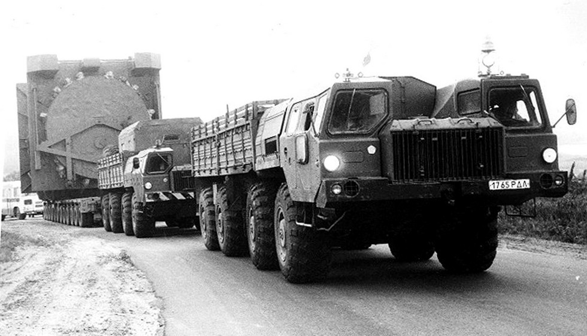
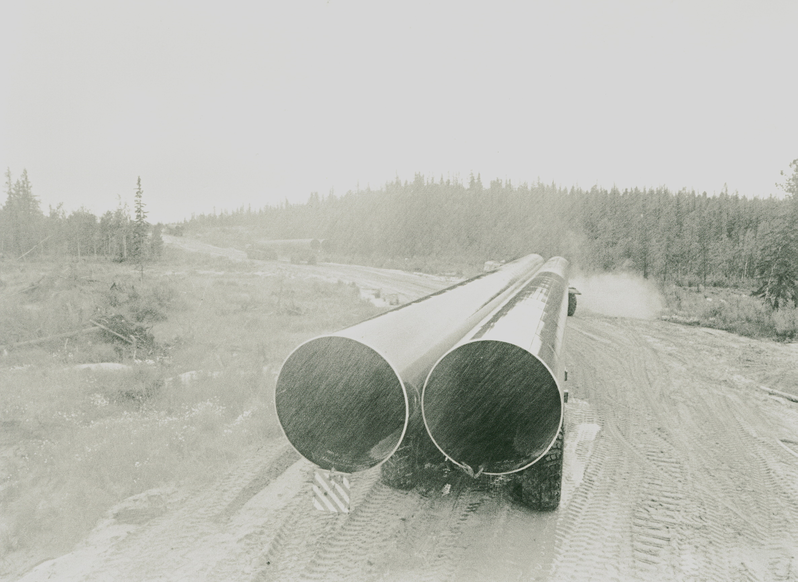

Памятник «Автомобилистам – первопроходцам», «Ураган»
Локация туристического маршрута
«Легенды Нового Уренгоя»
Вы стоите рядом с чудом советской инженерной мысли –легендарной машиной семейства МАЗ-543. Она – осколок той прекрасной эпохи, в которой наша страна создавала всё самое быстрое, большое, сильное и прекрасное. Неважно, что изобретения, по большей части, появлялись в военной и космической отраслях. Многие затем использовались в мирной жизни. Так и объект нашего внимания задумывался и строился для победы в гонке вооружений с Соединенными Штатами Америки.
Правительство СССР в конце 1950-х годов поставило перед Минским автомобильным заводом (МАЗ) сложную задачу – создать машину, которая смогла бы в самых сложных природно-географических и погодных условиях доставить в нужное место ракету и выстрелить ею в предполагаемого противника.
Конструкторское бюро МАЗ вело разработки в соответствии с конкретными параметрами ракеты.После серии полевых испытаний инженеры решили отказаться от гусеничного привода и поставили модель будущего тягача на колёсную базу.
Длина первой машины составила 11,5 метров, ширина 3 метра, максимальная высота 2,9 метра. Чудо инженерной мысли было оборудовано системой централизованного регулирования давления воздуха в шинах. Размеры шин составляли 1500×600 мм. Колеса первой и второй осей – управляемые. Благодаря этому шасси нового тягача было приспособлено для транспортирования оборудования по всем видам дорог и местностей в любое время года и суток при температуре окружающего воздуха от -40 до +50 градусов Цельсия, высокой влажности, запыленности воздуха и на высоте до 3000 м над уровнем моря.На грунтовых дорогах прототип мог развивать скорость до 30 км/час. Успех конструкторов ознаменовался в 1959 году выходом с конвейера полноприводной машины 537-й серии с четырёхосным шасси.

Следующая военная модификация 537-го шасси получила простое и лаконичное наименование МАЗ-543. От предшественника в неизменном виде остались только оси и рама. Новый серийный автомобиль обзавёлся улучшенными узлами, а за свою скорость и динамические характеристики получил название «Ураган».
Главным внешним отличием нового семейства тягачей стала характерная кабина, а вернее«типовой двухдверный двухместный звуко- и теплоизолированный кабинный модуль». Он обладал обратным наклоном лобового стекла, был оборудован вентиляцией, отоплением, переговорным устройством и фарой-искателем на крыше. Корпус модуля был выполнен из полиэфирной смолы, армированной жгутовой стеклотканью (стеклопластиком); отличался высокой надёжностью и ремонтопригодностью. Его прочность оказалась столь высокой, что во время проверки на ударную нагрузку развалился стенд, на котором была закреплена кабина, оставшаяся невредимой.
Два человека,члены боевого расчёта, располагались по оригинальной схеме «тандем» – на собственных сиденьях друг за другом. В «стационарной» левой кабине находились водитель и командир экипажа, в правой, откидывавшейся вперёд, – боевой расчёт надстройки или буксируемой системы.


Свободное пространство между ними служило для монтажа вспомогательного оборудования, поперечного радиатора, размещения передней части ракеты или пускового контейнера. Пониженное расположение надстройки позволило уменьшить габаритную высоту всей ракетной системы, которая могла передвигаться по дорогам общего пользования, проходить под мостами и низкими линиями электропередач, а также соответствовала габаритным нормативам советских железных дорог.
При собственной массе в 23 тонны тягач обладал грузоподъемностью около 20 тонн.
Расход дизельного топлива составлял 100 литров на 100 км. МАЗ нёс три топливных бака общей ёмкостью 700 литров. То есть на одной заправке тягач мог пройти около 700 километров. Мощность двигателя достигала 500 лошадиных сил.
В таком виде первые образцы новой машины были переправлены в Волгоград, на завод «Баррикады», для испытания на них ракетных пусковых установок.Там на шасси высокой проходимости были размещены ракета, пункт управления и наведения, боевой расчёт.

Поскольку машина могла преодолевать глубокие болота, пески и другое опасное бездорожье, она стала незаменимой для освоения районов Крайнего Севера. На базе военной машины МАЗ-543 конструкторы разработали гражданский полноприводный четырёхосный седельный тягач. Назывался он МАЗ-543П и был оснащён бортовой платформой для перевозки различных грузов массой до 19,6 тонн. Платформа закрывалась пятью откидными металлическими бортами. Внутренние размеры платформы: 7222×2848×707 мм.

Основным отличием гражданских машин от своих военных сестёр стало отсутствие специального военного оснащения, светомаскировочных приспособлений и возможность эксплуатации совместно с двухосным прицепом МАЗ-8385, в составе автопоезда. При этом его общая длина достигала 20550 мм.

Этот «Ураган» изначально создавали для народного хозяйства с целевым использованием в газо- и нефтегазодобывающем комплексе. Конвейерный выпуск этой модификации под названием МАЗ-73101 начали в 1976 году. С января 1983 года новая гражданская модификация МАЗ-7313 стала поступать с конвейера Минского завода.
Главными достоинствами всех вариантов машин семейства МАЗ-543 считались особая прочность и надёжность конструкции, высокие динамические качества и проходимость достаточная манёвренность и практичность. На «Ураган» при необходимости можно было монтировать множество видов дополнительного оборудования. Кроме этого машина обладала большой устойчивостью к вертикальным ударным нагрузкам, что позволяло использовать на ней даже самое капризное оборудование.
Надо ли говорить, как нужны были эти машины здесь, на Крайнем Севере? При высокой грузоподъёмности они легко выигрывали конкуренцию по проходимости у тракторов и не требовали сооружения дополнительных транспортных саней. В 1980-е годы«Ураганы» активно использовали для перевозки крупногабаритных механизмов и строительных материалов на разные площадки Уренгойского нефтегазоконденсатного месторождения.

Арктика предъявляла машинам свои требования, но МАЗы с ними справлялись. «Ураганы» преодолевали подъёмы крутизной до 30 градусов, рвы шириной до 2,5 метров и без подготовки форсировали броды глубиной до 1,1 метра.
Особую роль тягачи сыграли во время строительства легендарных магистральных газопроводов, например «Уренгой-Помары-Ужгород». «Ураганы»со своими прицепами позволяли в тяжёлых природных условиях Севера перевозить огромные связки газопроводных труб диаметром 1 метр 42 сантиметра и длиной 11 метров.

Управлять такой большой машиной могли не все водители, хотя бы потому, что при скорости в 40 км/ час её тормозной путь составлял 21 метр. Здесь нужны были 19*особенные таланты.Таких водителей так и называли «ураганщики». Они оставили яркий след в истории освоения Крайнего Севера России, а МАЗ семейства 543 стал легендой.
Машину, которая находится перед вами,подняли на пьедестал почета в 1990 году, благодаря усилиям и заботе известного в городе человека — Александра Сергеевича Рябова.
В 2019 году Новоуренгойский музей изобразительных искусств провёл на площадке рядом с памятником автомобилистам-первопроходцам субботник по очистке территории. В 2020 году управление городского хозяйства провело здесь работы по благоустройству.
Подойдите к ней, троньте колесо и задумайте доброе желание на будущую вашу дорогу.